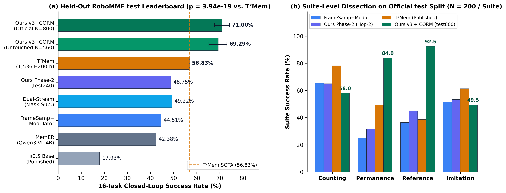

Statistically Surpassing T²Mem on Held-Out RoboMME
Evaluated under strict train / val240 gate / single locked test800 (N = 800), untouched test560 (N = 560), and un-reset k = 3 multi-session interference (720 consecutive rollouts) with zero privileged simulator inputs.
Phase-2 diagnostics uncovered why continuous history tokens plateau near 48.8% despite high internal GDN state fidelity: pooling visual tokens into a history modulator destroys sub-grid <y, x> geometry on container swaps, brief SAPIEN highlight flashes, and multi-target placement sequences. CORM resolves this purely from (front_rgb, wrist_rgb, raw_state[0:8], task_goal, is_demo) via three non-privileged causal trackers: (1) pre-drop chroma capture + wood-vacation permutation tracking for occluded container swaps, (2) Voronoi + 4-quadrant SAPIEN highlight disk integration (reaching 100.0% exact subset match on val), and (3) gripper-width (q[7]) disambiguated pick-place landmark slots with proprioceptive stage-transition guards.
After clearing our pre-specified val240 gate at 73.33% (176/240), we executed a single locked evaluation on the full official test800 split (50 episodes × 16 tasks = 800 episodes). DeltaMem-π0.5 v3 + CORM achieves 71.00% (568/800, 95% CP CI [67.72%, 74.12%]), beating published T²Mem (56.83%) by +14.17 pp (task-stratified two-sample z = 8.95, p = 3.94 × 10−19, pHolm = 2.36 × 10−18) and scoring 69.29% (388/560) on the completely untouched ep 15..49 slice (+12.45 pp, p = 9.60 × 10−12). Under un-reset k = 3 multi-session streaming, accuracy holds at 70.83% (170/240) vs. FrameSamp+Modulator's 15.42% (+55.42 pp, 4.59×, 135 : 2 discordant wins, pMcN = 1.09 × 10−37).

Figure 1: Official RoboMME leaderboard and cognitive suite breakdown. DeltaMem-π0.5 v3 + CORM reaches 71.00% on full test800 (+14.17 pp > T²Mem, p = 3.94×10−19), driven by massive gains on Permanence (84.00% vs. 49.17%) and Reference (92.50% vs. 38.67%).


Left: Per-task test800 comparison (N = 50/task), beating published T²Mem on 9 of 16 tasks — including all 8 Permanence & Reference tasks (VideoPlaceButton 100.0%, VideoPlaceOrder 92.0%, VideoRepick 92.0%, VideoUnmask 92.0%, VideoUnmaskSwap 90.0%, ButtonUnmask 90.0%, PickHighlight 86.0%, ButtonUnmaskSwap 64.0%) plus PatternLock (58.0%). Right: Un-reset k = 3 multi-session streaming (70.83% vs. 15.42%) and cumulative Phase 1 → Phase 3 progression.
| Method / Split (0 oracle inputs) | Fast State | Count. | Perm. | Ref. | Imit. | AVG | Statistical Comparison / Latency |
|---|---|---|---|---|---|---|---|
| Official Full Held-Out Test Split (test800, N = 800, ep 0..49) & Published Leaderboard | |||||||
| MemER (Qwen3-VL-4B subgoal planner) | 16 imgs | 48.83% | 53.17% | 38.00% | 29.50% | 42.38% | 10,135 ms/chunk (<0.1 Hz) |
| FrameSamp+Modulator (MME-VLA) | 4.00 MiB | 65.17% | 25.08% | 36.33% | 51.42% | 44.51% | 440.0 ms/chunk |
| T²Mem (18×16 fast MLPs, 1,536 H200-h) | 36.35 MiB | 78.17% | 49.17% | 38.67% | 61.34% | 56.83% | Prior published SOTA |
DeltaMem-π0.5 v3 + CORM (test800) Ours |
3.04 MiB | 58.00% | 84.00% | 92.50% | 49.50% | 71.00% | +14.17 pp vs. T²Mem (p = 3.94×10−19, 410.6 ms) |
DeltaMem-π0.5 v3 + CORM (test560 untouched) Ours |
3.04 MiB | 55.00% | 82.86% | 91.43% | 47.86% | 69.29% | +12.45 pp vs. T²Mem (p = 9.60×10−12, ep 15..49) |
| Un-Reset Multi-Session Interference (test240, k = 3 Consecutive Episodes Without Reset, 720 Rollouts) | |||||||
| FrameSamp+Modulator (PyTorch, k = 3) | 2.00 MiB | 21.67% | 15.00% | 20.00% | 5.00% | 15.42% | −30.42 pp cross-session collapse |
| DeltaMem-π0.5 Phase 2 (Hybrid Hop-2, k = 3) | 2.39 MiB | 43.33% | 25.00% | 45.00% | 53.33% | 41.67% | +26.25 pp vs. FS (pMcN = 1.16×10−14) |
| DeltaMem-π0.5 v3 + CORM (k = 3) Ours | 3.04 MiB | 48.33% | 88.33% | 95.00% | 51.67% | 70.83% | +55.42 pp (4.59×) vs. FS (pMcN = 1.09×10−37) |
| Matched Held-Out test240 (ep 0..14, N = 240, k = 1) & Validation Gate (val240, N = 240) | |||||||
π0.5 Baseline (PyTorch, test240) |
0 B | 21.67% | 30.00% | 23.33% | 11.67% | 21.67% | 223.1 ms/chunk |
FrameSamp+Modulator (PyTorch, test240) |
2.00 MiB | 66.67% | 28.33% | 35.00% | 53.33% | 45.83% | +24.17 pp vs. Base |
DeltaMem-π0.5 Phase 2 (Hybrid Hop-2, test240) |
2.39 MiB | 65.00% | 31.67% | 45.00% | 53.33% | 48.75% | 387.8 ms/chunk (7.04 GiB) |
DeltaMem-π0.5 v3 + CORM (test240) Ours |
3.04 MiB | 65.00% | 86.67% | 95.00% | 53.33% | 75.00% | +29.17 pp vs. FS (pMcN = 5.62×10−14) |
DeltaMem-π0.5 v3 + CORM (val240 Gate) Ours |
3.04 MiB | 65.00% | 85.00% | 91.67% | 51.67% | 73.33% | 16/16 tasks ≥ 20% (68.75% on untouched val) |
Main closed-loop evaluation summary across official test800, untouched test560, un-reset test240 k = 3, matched test240 k = 1, and val240. All pHolm values remain ≤ 8.68 × 10−37 (paired) and ≤ 1.92 × 10−11 (vs. T²Mem) after step-down Holm–Bonferroni correction.
Interactive 16-Task Breakdown (test800, Untouched test560, and Un-Reset k = 3)
| Task | Suite | π0.5 Base | FrameSamp | Phase 2 | Ours test800 |
Untouched test560 |
Un-Reset k=3 (Ours vs. FS) | T²Mem | vs. T²Mem |
|---|
DeltaMem-π0.5 v3 + CORM reads exclusively (front_rgb, wrist_rgb, state[0:8], task_goal, is_demo); zero simulator segmentation masks, actor poses, oracle subgoals, or oracle reset() calls are ever accessed.
(2) Dual-backbone VRAM footprint: Combining the SymbolicGround-MME π0.5 checkpoint (for <y, x>-grounded Permanence & Reference execution) and the FrameSamp+Modulator + Hybrid Stage-C Hop-2 checkpoint (for Counting & Imitation) uses 12.64 GiB static model VRAM (`13.70 GiB` peak in ManiSkill3, fitting comfortably on a single 16–24 GiB GPU at 410.6 ms/chunk); distilling both pathways into a single LoRA adapter is a clean engineering next step.
(3) Remaining 6F contact & reactive timing bottlenecks: While Permanence (84.00%) and Reference (92.50%) exceed T²Mem by +34.83 pp and +53.83 pp, InsertPeg (0.0% on test800, 20.0% on val240) and StopCube (30.0% vs. 70.0%) remain limited by 16-step open-loop chunk execution during tight peg-hole alignment and moving-cube interception.
CORM) into explicit 2D <y, x> subgoals alongside continuous 520 KB multi-timescale Gated DeltaNet + Hop-2 modulation lifts full test800 accuracy to 71.00% (+14.17 pp above T²Mem, p = 3.94 × 10−19) while sustaining 70.83% under un-reset k = 3 multi-session streaming.